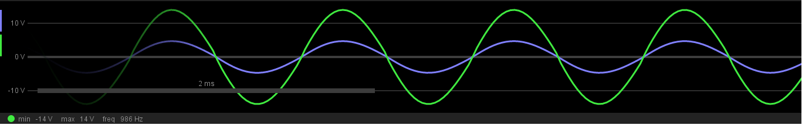

L'oscillatore a ponte di wien si compone di due stadi collegati ad anello chiuso. Il primo stadio formato da un amplificatore non invertente e il secondo stadio in cascata che riporta una parte del segnale di uscita dell'amplificatore all'ingresso non invertente. La risposta in frequenza $\beta( \omega )$ di questo secondo stadio dipende dalla frequenza del segnale Vout ma si dimostra che per $$f=\frac{1}{2 \pi RC}$$ assume il valore massimo in modulo $$\beta=(\frac{1}{3})$$ e fase nulla. Quindi se si progetta lo stadio amplificatore in modo da avere A=3.01 ad esempio il guadagno di anello $$A\beta>1$$ sarà leggermente maggiore di uno garantendo un guadagno leggermente maggiore di uno.
Essendo il rumore termico di tipo bianco gaussiano, la componente sinusoidale di frequenza f verrà amplificata fino a raggiungere la tensione di saturazione dell'amplificatore, valore in corrisposndenz del quale intervengono le non linarità della'mplificatore a limitare il guadagno di anello. Tuttavia il segnale in questo modo risulterà distorto.
Limitazione di ampiezza
Esistono diversi schemi per il controllo dell'ampiezza dell'oscillazione sinusoidale. Il metodo più seplice prevede che ad un certo livello di ampiezza entri in conduzione una coppia di diodi che limitino il guadagno di anello ad un valore pari ad uno, in modo che l'ampiezza dell'oscillazione non possa più aumentare
L'oscillatore si compone di due stadi. Un op.amp. non invertente e due celle filtranti RC identiche, una serie ed una parallelo.Variando la posizione del potenziometro passiamo da una amplificazione di anello molto maggiore di uno e forte distorsione ad una con piccola distorsione e limitazione forte della'ampiezza massima. Per limitare tale distrsione si può prelevae l'usciat direttamente dalla cella RC serie che ha il pregio di filtrare la Vout. Essendo un punto ad alta impedenza si pò pensare di prelevare il segnale tramite un inseguitore di tensione.
 L'oscillazione è limitata tra +14V e -14V per la Vout e tra (14/3)V e -(14/3)V su V+ .Visita la pagina del simulatore per visualizzare la simulazione.